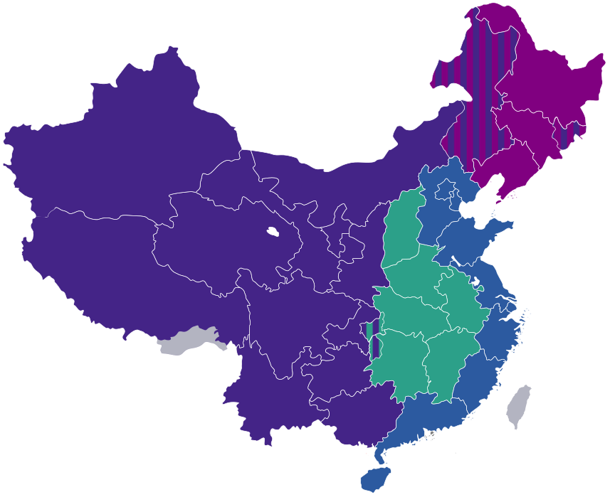

Executive Summary
이 글은 중국 국무원 판공청이 10월 23일 공개한 의견 한 건을 고용 정책이 아니라 데이터 공급망 문서로 읽는다. 6개 방면 18개 항으로 짜인 이 문건의 첫 항은 동부 지역에 AI 핵심 산업을 두고, 중부와 서부 지역은 데이터 라벨링과 스마트 단말기 제조를 넘겨받게 하라고 했다. 학습 데이터를 만드는 일이 한 나라의 산업 배치 항목으로 호명된 것이다. 라벨링 기지를 맡을 도시 일곱 곳은 2024년 5월에 이미 정해져 있었다. 이번 문건이 더한 것은 두 권역을 같은 산업의 다른 층에 세운 분업이다.
같은 문건의 일곱 번째 항은 AI 사업에 고용 위험 평가를 붙이라고 하면서 대상을 두 문장으로 갈라 놓았다. 인허가가 걸린 영역은 사업 심사와 동시에 평가하고, 그 밖의 영역은 실정에 맞게 한다. 데이터 라벨링은 인허가를 받아야 여는 업종이 아니다. 문건이 지역으로 보내라고 적은 바로 그 일이, 같은 문건에서 평가가 언제 붙는지 적히지 않은 쪽에 놓인다.
1절부터 3절까지는 문건의 문구와, 국가데이터국과 인력자원사회보장부가 앞서 내놓은 기지 도시 명단·직업 기준, 그리고 중국신통원의 산업 보고를 따라간다. 4절에서 이 배치를 데이터 구매자의 문제로 옮겨 읽는 대목은 문건에 없는 이 글의 해석이다.
주요 수치
이번 문건이 처음 만든 것과 이미 있던 것을 가르는 세 가지다.
출처: 국무원 판공청 의견 전문(과학기술일보 게재) · 인공지능 훈련사 국가직업기능표준(2021년판)
2020년 3월
AI 훈련사가 신직업이 된 때
데이터 라벨러는 그 아래 직종으로 같이 들어갔다. 이번 문건이 붙인 이름이 아니다
5등급
AI 훈련사 국가직업기능표준의 숙련 단계
2021년 제정. 데이터 수집·처리와 라벨링은 가장 아래 두 등급이 맡는 일로 적혀 있다
두 칸
고용 위험 평가가 나뉘는 방식
인허가 영역은 심사와 동시에, 그 밖은 실정에 맞게. 데이터 라벨링은 뒤칸이다
산업 지도에 적힌 데이터 라벨링
문건의 이름은 「인공지능 기술 발전에 적응해 고용친화형 발전 방식 구축을 돕는 것에 관한 의견」이다. 국무원 판공청이 각 성·자치구·직할시 정부와 국무원 각 부처에 보냈고, 문건 번호는 국판발 〔2026〕 29호, 서명일은 10월 16일, 공개는 10월 23일이다. 한국 매체들이 전한 10월 24일 기사는 이 공개본을 받은 것이다. 6개 방면에 18개 항이 달려 있고, 방면의 이름은 고용 창출 효과 강화, 고용친화형 업그레이드 경로 구축, 노동자의 디지털 소양과 취업 능력 향상, 고용 정책 서비스 지원, 노동자 권익·사회보장 제도 정비, 고용 위험 감시와 대응 체계 보완 순이다.
데이터 쪽에서 읽을 것은 맨 앞 항이다. 첫 번째 항 「신흥 영역의 인공지능 고용 공간 확대」는 이렇게 적는다. 인공지능+ 행동을 깊이 시행하고, 동부 지역에는 인공지능 핵심 산업을 배치하도록 장려하며, 중부·서부 지역은 지역 사정에 맞게 데이터 라벨링과 스마트 단말기 제조 등 상·하류 산업을 이어받도록 이끈다.
문장 하나에 두 지역과 두 종류의 일이 나뉘어 있다. 동부가 맡는 쪽은 핵심 산업이고, 중부·서부가 가져가는 쪽은 상·하류 산업이다. 이어받는다고 옮긴 동사는 원문의 승접(承接)인데, 중국의 산업 정책 문서에서 이 말은 보통 한 지역에서 다른 지역으로 넘어오는 생산 공정을 받는다는 뜻으로 쓰인다. 공장 이전을 말할 때 쓰던 동사가 데이터 라벨링에 붙었다.
인용문 첫머리의 인공지능+ 행동은 따로 있는 상위 계획을 가리킨다. 국무원이 2025년 8월 26일 공개한 「인공지능+ 행동의 심화 시행에 관한 의견」이고, 과학기술·산업·소비·민생·거버넌스·국제협력 여섯 영역에 2027년과 2030년, 2035년의 단계 목표를 걸어 두었다. 이번 고용 의견은 그 계획의 이름을 받아 쓰면서 지역을 나누는 문장을 하나 더했다.
데이터 라벨링을 지역에 배치한 문서는 전에도 있었다. 2024년 5월 24일 국가데이터국은 제7회 디지털중국 정상회의에서 데이터 라벨링 기지 건설 임무를 맡을 일곱 도시를 발표했다. 쓰촨 청두, 랴오닝 선양, 안후이 허페이, 후난 창사, 하이난 하이커우, 허베이 바오딩, 산시 다퉁이고, 이 가운데 청두와 허페이, 창사, 다퉁 네 곳이 중부와 서부에 있다. 도시를 고른 기준으로는 산업 기반과 인적 자원의 강점, 디지털 경제의 잠재력과 함께 지역 균형 발전이 들어 있다. 그해 12월에는 발전개혁위원회와 국가데이터국, 재정부, 인력자원사회보장부가 「데이터 라벨링 산업의 고품질 발전 촉진에 관한 실시 의견」을 내고 2027년까지 이 산업의 연평균 복합 성장률을 20% 넘게 끌어올리겠다는 목표를 걸었다.

그러니 이번 문건이 처음 적은 것은 라벨링의 지역 배치 자체가 아니다. 새로운 것은 둘이다. 동부와 중서부에 서로 다른 층을 맡기는 분업이 한 문장 안에 들어갔고, 그 문장이 산업 육성 문서가 아니라 고용 문서에 적혔다. 2024년 12월의 실시 의견에는 중서부라는 말이 나오지 않는다.
배치가 먼저 있었던 만큼 집계도 먼저 나와 있다. 중국신통원이 2025년 8월에 낸 「데이터 라벨링 산업 발전 연구보고」는 일곱 기지가 지금까지 쌓은 것을 이렇게 전한다. 같은 보고는 2025년 상반기까지 이 기지들이 데이터셋 524개를 만들어 모델 163개에 공급했다고 덧붙인다.
출처: 국가데이터국, 데이터 라벨링 기지 건설 도시 명단 · 중국신통원·중전신 인공지능, 데이터 라벨링 산업 발전 연구보고(2025년)
5만 8천 명
일곱 기지의 라벨링 종사자
2025년 3월 청두에서 열린 기지 현장회에서 나온 집계다
17,282TB
일곱 기지가 쌓은 라벨링 규모
보고는 중국 국가도서관 디지털 자원 총량의 여섯 배가량이라고 밝힌다
83억 위안
일곱 기지가 끌어낸 라벨링 업계 관련 생산액
같은 집계에서 라벨링 기업 223개를 유치하고 길러 냈다고 밝혔다
라벨링을 어디서 할지는 장부상 여전히 발주처의 선택이다. 어느 벤더가 싼지, 어느 나라가 그 언어를 다루는지, 어느 팀이 품질 기준을 맞추는지를 사는 쪽이 따진다. 이 문건은 같은 질문을 행정의 언어로 다시 묻는다. 어느 지역이 이 일을 받을 것인가.
두 영역 다 평가를 받고, 때가 적힌 쪽은 하나다
문건은 일자리를 만드는 조항만 담고 있지 않다. 여섯 번째 항 「인공지능 적용의 고용 대체 영향 완화」는 적용 순서와 속도를 함께 지시한다. 인력이 모자라거나 환경이 위험한 자리에 먼저 적용하고, 노동집약형 업종에서는 적용의 범위·강도·속도를 신중히 조절해 종사자가 받는 충격을 되도록 줄이라는 것이다. 기업에는 실업 완충 기간 제도를 탐색하도록 장려하고, 대규모 적용 과정에서 영향을 받는 노동자에게 미리 알리고 전직·전환 지원을 제공하라고 권했다. 장려하고 탐색하라는 말이 그대로 쓰여 있다. 의무가 아니다.
일곱 번째 항 「인공지능 적용의 고용 위험 평가 기제 수립」이 이 문건에서 가장 구체적인 장치다. 조문은 두 문장으로 돼 있다. 앞 문장은 시장 진입 영역에서 비교적 큰 고용 충격을 일으킬 수 있는 인공지능 적용 사업에 대해 심사 때 고용 위험 평가를 동시에 진행하고, 관련 부처가 전직·전환 지원을 함께 마련하라고 적는다. 뒤 문장은 그 밖의 영역의 인공지능 적용 사업에 대해서는 실정에 맞게 고용 위험 평가를 진행하라는 내용이다.
시장 진입 영역이란 사업을 열려면 정부 부처의 허가와 심사를 거쳐야 하는 분야를 말한다. 로보택시처럼 면허 없이는 운행할 수 없는 업종이 여기 든다. 앞 문장이 작동하는 이유는 평가를 걸 자리가 이미 있기 때문이다. 심사라는 절차가 있고, 심사하는 부처가 있고, 심사하는 시점이 있다. 고용 위험 평가는 그 위에 얹힌다.
데이터 라벨링은 오른쪽 칸이다. 라벨링 업체를 여는 데에는 면허 심사가 없다. 소프트웨어 개발처럼 진입 문턱이 낮은 일이고, 중부·서부 지역이 이 일을 시작하기 쉬운 이유도 거기에 있다. 그런데 같은 성질이 평가에서는 반대로 작동한다. 얹을 심사가 없으니 평가를 언제 할지도 정해지지 않는다. 뒤 문장이 남긴 것은 실정에 맞게라는 말 하나다.
여기서 한 가지는 분명히 해 둬야 한다. 이 조항을 두고 인허가 영역 밖에는 평가 규정이 없다고 요약한 해설이 국내외에 여럿 나왔는데, 그것은 조문의 뒤 문장을 빠뜨린 읽기다. 뒤 문장은 분명히 평가를 하라고 적는다. 갈리는 것은 대상이 아니라 시점과 절차다. 앞 칸에서는 평가가 심사라는 관문에 붙고, 뒤 칸에서는 붙을 관문이 조문에 적히지 않았다.
감시 조항도 함께 보면 그림이 조금 달라진다. 열여섯 번째 항은 인공지능 관련 산업과 고용 데이터를 부처 간에 공유하고, 지역별·업종별 고용 데이터 지능 감시 분석 모델을 함께 세우라고 주문한다. 평가가 사업 단위에서 붙지 않는 영역이라도 통계 단위에서는 잡힐 수 있다는 뜻이다. 다만 그것은 사후에 집계되는 그물이고, 앞 칸의 평가는 사업을 허가하기 전에 걸리는 관문이다. 두 장치가 막는 시점이 다르다.
새 직업이라 불린 이름들의 나이
네 번째 항 「인공지능 영역 신직업 개발 가속」은 인공지능 장면의 육성과 대규모 적용을 중심으로 신직업 개발과 신직업 표준 발표를 서두르고, 디지털화 관리사·인공지능 공학기술인원·인공지능 훈련사 등 신직업·신직종의 수요를 확대한다고 적는다. 국내 보도 대부분이 이 대목을 새 직업군을 거론했다고 옮겼다.
조문이 쓴 동사는 확대(扩大)이고, 확대의 목적어는 수요다. 이름을 새로 만든다는 말이 아니다. 실제로 이 이름들은 이미 중국의 국가 직업 분류 안에 있다. 디지털화 관리사는 2019년 4월 인력자원사회보장부·시장감독관리총국·통계국이 발표한 1차 신직업 13종에 들었고, 인공지능 훈련사는 2020년 3월 같은 부처가 발표한 2차 신직업 16종에 들었다.
인공지능 훈련사의 내부 구조도 눈여겨볼 만하다. 이 직업은 발표 당시부터 두 개의 직종을 품고 있었다. 데이터 라벨러와 인공지능 알고리즘 테스터다. 데이터에 라벨을 붙이는 노동은 2020년에 이미 국가 직업 분류 안에 자리를 하나 받았고, 그 자리의 이름이 인공지능 훈련사였다.
2021년 11월에는 인력자원사회보장부와 공업정보화부가 인공지능 훈련사 국가직업기능표준을 제정했다. 직업 코드는 4-04-05-05이고, 숙련도를 5급 초급공부터 1급 고급기사까지 다섯 단계로 나눈다. 단계별로 묶인 능력도 표준에 함께 나온다. 데이터 수집·처리와 데이터 라벨링, 지능 시스템 운영·유지는 가장 아래 두 단계인 5급과 4급의 영역이고, 업무 분석과 지능 훈련은 3급 이상에서 시작한다.
| 이름 | 국가 직업 등재 | 이번 문건이 적은 것 |
|---|---|---|
| 디지털화 관리사 | 2019년 4월 (1차 13종) | 수요 확대 |
| 인공지능 공학기술인원 | 2019년 4월 (1차 13종) | 수요 확대 |
| 인공지능 훈련사 (아래 직종: 데이터 라벨러·알고리즘 테스터) | 2020년 3월 (2차 16종) | 수요 확대 |
세 이름 모두 이번 문건 이전에 등재됐다. 문건이 적은 것은 이름이 아니라 수요다.
이 순서를 알고 나면 1절의 조항이 다르게 읽힌다. 중부·서부가 받을 일은 분류도 없고 기준도 없는 새로운 노동이 아니다. 여섯 해 전부터 직업명이 있었고, 다섯 해 전부터 직종으로 묶였고, 네 해 전부터 등급별 능력 기준이 있었다. 이번 문건은 거기에 그 수요를 늘리겠다는 방침과, 같은 일을 동부와 중서부로 갈라 놓은 조항 하나를 더했다.
페블러스가 이 문건을 주목하는 이유
중국의 고용 정책은 페블러스가 다루는 영역이 아니다. 그런데 이 문건은 우리가 매일 쓰는 한 낱말의 위치를 바꿔 놓는다. 데이터 준비 비용이라는 말을 우리는 보통 조달 쪽 항목으로 쓴다. 견적을 받고, 단가를 비교하고, 품질 기준을 걸고, 납기를 맞춘다. 이 문건에서 같은 일은 지역 고용 정책의 항목이다. 그런데 의견의 총체 요구에는 목표 연도도 수치도 없다. 숫자는 1절에서 본 기지 집계에서 나오는데, 거기서 세는 것은 종사자 수와 기업 수, 생산액과 데이터 용량이다. 그 라벨이 얼마나 고르게 붙었는지는 어느 쪽에서도 세지 않는다.
둘이 충돌한다는 말은 아니다. 다만 사는 쪽이 보는 지표와 배치하는 쪽이 보는 지표가 다르다. 라벨링 데이터의 품질은 결국 라벨러의 숙련과 머무는 기간에서 나온다. 같은 지침을 읽고도 경계 사례에서 판단이 갈리는 것을 줄이는 일, 라벨러가 바뀔 때마다 기준이 흔들리지 않게 하는 일이 품질 관리의 대부분이다. 3절에서 본 국가직업기능표준이 다섯 등급을 나눠 놓은 것도 같은 이유에서다. 숙련에 단계가 있다는 전제가 그 표준에 들어 있다.
이 대목에서 같은 나라의 두 문서가 서로 다른 말을 한다. 국가데이터국이 지도하고 중국신통원이 2025년 8월에 낸 산업 보고는 대모델이 커지면서 라벨링이 노동집약형에서 지식집약형으로 넘어가고 있다고 진단한다. 데이터셋을 판정하는 기준이 복잡해져 라벨러에게 더 깊은 이해와 분석 능력을 요구하고, 종사자 구성도 전문대 중심에서 학사 이상과 여러 분야 전공자로 옮겨 간다는 것이다. 한편 고용 문건은 같은 일을 공장 공정처럼 이어받으라는 동사로 적는다. 사는 쪽에서 보면 두 문장이 가리키는 곳은 같은 공급처다.
같은 보고가 고품질 라벨링의 조건으로 꼽은 넷 가운데 앞의 둘도 읽어 둘 만하다. 사실 정확성은 전문 영역의 데이터를 그 분야 자격을 갖춘 라벨러가 맡아야 한다는 조건이고, 의미 일관성은 비슷한 맥락에서 같은 기준이 나오도록 장면을 가로지르는 규범 체계를 세워 두라는 조건이다. 둘 다 도구가 아니라 사람과 기준에 걸려 있다.
그래서 이 문건을 데이터를 조달하는 자리로 옮겨 놓으면 질문이 세 개 남는다.
- 우리가 받는 라벨이 어느 등급의 숙련에서 나왔는지 아는가. 표준이 다섯 단계를 나눠 둔 영역에서 등급을 묻지 않는 발주는 가격만 묻는 발주다
- 작업 인력이 새로 꾸려진 지역으로 옮겨 갔을 때, 같은 지침으로 같은 판단이 나오는지를 확인할 방법이 있는가. 지역 이전은 사람이 바뀐다는 뜻이고, 기준은 사람을 따라 흔들린다
- 공급 측 비용이 정책으로 낮아진 구간에서, 그 낮아진 가격이 우리 데이터의 무엇을 바꾸는지 따로 측정하는가
셋 가운데 둘째가 가장 바로 해 볼 만하다. 지금 쓰는 지침서로 경계 사례 묶음을 만들어 두면, 공급처가 바뀔 때마다 같은 묶음을 다시 돌려 답이 갈리는 지점을 셀 수 있다. 공급망이 지도 위에서 움직이는 동안 손에 쥐고 있을 수 있는 것은 그런 종류의 기준이다.
여기까지 읽어 주셔서 감사하다. 이 글의 조문 인용은 중국 관영 매체들이 게재한 의견 전문에서 직접 확인했고, 직업 등재 연도와 등급 체계는 인력자원사회보장부가 발표한 신직업 목록과 국가직업기능표준에서, 기지 도시 명단과 집계는 국가데이터국 발표와 중국신통원 산업 보고에서 가져왔다. 문건이 적지 않은 것을 적었다고 쓰지 않으려 애썼다. 해외에서 라벨링을 조달하시는 분들이 공급처의 숙련 수준을 어떤 방식으로 확인하고 계신지 들려주시면 좋겠다.
(주)페블러스 데이터 커뮤니케이션팀
2026년 10월 25일
참고문헌
정부·공식 문서
- 1.国务院办公厅. (2026). 「关于适应人工智能技术发展助力构建就业友好型发展方式的意见」. 国办发〔2026〕29号, 서명 10월 16일, 공개 10월 23일. 과학기술일보(stdaily.com) 게재 전문.
- 2.国家数据局. (2024). 「承担数据标注基地建设任务的城市名单」. 국가데이터국 발표, 2024년 5월 24일.
- 3.国家发展改革委·国家数据局·财政部·人力资源社会保障部. (2024). 「关于促进数据标注产业高质量发展的实施意见」. 发改数据〔2024〕1822号, 2024년 12월 26일. 중국정부망 게재.
- 4.国务院. (2025). 「关于深入实施"人工智能+"行动的意见」. 国发〔2025〕11号, 2025년 8월 21일. 중국정부망 게재.
- 5.人力资源社会保障部·工业和信息化部. (2021). 「人工智能训练师国家职业技能标准」. 직업코드 4-04-05-05. 표준 전문(PDF).
업계 조사·분석
- 6.中国信息通信研究院人工智能研究所·中电信人工智能科技. (2025). 「数据标注产业发展研究报告(2025年)」. CAICT 발표(PDF), 2025년 8월.
- 7.China AI Dispatch. (2026). "China Will Screen Some AI Projects for the Jobs They Could Cut."
언론 보도
- 8.핀포인트뉴스. (2026). "중국, AI 산업 키우면서 노동자 보호…중·서부엔 데이터 일자리 육성," 10월 24일.
- 9.CRI 한국어판. (2026). "중국 국무원 판공청, 'AI 시대 고용친화적 발전 방식 구축에 관한 의견' 발표," 10월 23일.
- 10.네이트뉴스. (2026). 중국 국무원 AI 고용친화형 발전 방식 구축 의견 관련 보도, 10월 24일.